import pandas as pd
Introducción a Python - Parte 5
Libreria Pandas

La libreria Pandas provee estructuras de datos, genera gráficos de alta calidad con matplotlib y se integra de buena forma con otras bibliotecas que usan arrays de NumPy.
Las principales características son:
- Se definen nuevas estructuras de datos como DataFrames
- Permite leer y escribir fácilmente ficheros en formato CSV, Excel y bases de datos SQL.
- Permite acceder a los datos mediante índices o nombres para filas y columnas.
- Permite realizar diferentes operaciones de manera eficiente con un conjunto de datos.
Para poder usar Pandas primero debemos instalarlo ya que es modulo externo. Por ejemplo, si se esta trabajando Python en conda, se debe abrir la terminal (Anaconda Prompt) y escribir conda install -c anaconda pandas.
Una vez instalado, la forma más común de importar esta librería en nuestro archivo de trabajo es utilizando el alias pd.
Ejemplo de un DataFrame con Diccionarios
elementos = {"Numero atomico":[1,6,47,88],
"Masa atomica":[1.008, 12.011, 107.87, 226],
"Familia": ["No Metal","No Metal","Metal","Metal"]
}
tabla_periodica = pd.DataFrame(elementos)
print(tabla_periodica) Numero atomico Masa atomica Familia
0 1 1.008 No Metal
1 6 12.011 No Metal
2 47 107.870 Metal
3 88 226.000 Metal# Libreria Matplotlib

Matplotlib es una biblioteca completa para crear visualizaciones estáticas, animadas e interactivas en Python
Para poder usar Matplotlib primero debemos instalarlo ya que es modulo externo. Por ejemplo, si se esta trabajando Python en conda, se debe abrir la terminal (Anaconda Prompt) y escribir conda install matplotlib.
En la pagina principal de Matplotlib encontraras mas funciones para graficar. En el siguiente link, se encuentran un CheatSheets de esta libreria https://matplotlib.org/cheatsheets/cheatsheets.pdf
Una vez instalado, la forma más común de importar esta librería en nuestro archivo de trabajo es utilizando el alias plt. También, se suele utilizar la libreria numpy para crear los vectores.
# Importar las librerias necesarias
import matplotlib
import numpy as np
Colores

Tomado de: https://matplotlib.org/stable/tutorials/colors/colors.html#sphx-glr-tutorials-colors-colors-py
Tipos de línea
| Código | Tipo de línea |
|---|---|
| - | Solida |
| – | A trozos |
| : | Punteada |
Tipos de marcadores
| Código | Marca | Descripción |
|---|---|---|
| \(.\) | \(.\) | Punto |
| O | \(o\) | Circulo |
| + | \(+\) | Mas |
| X | \(\times\) | Cruz |
| D | \(\diamond\) | Ciamante |
| S | \(\square\) | Cuadrado |
| * | \(\star\) | Estrella |
Ubicación de la leyenda
| String | integer |
|---|---|
| ‘best’ | 0 |
| ‘upper rigth’ | 1 |
| ‘upper ledft’ | 2 |
| ‘lower left’ | 3 |
| ‘lowe right’ | 4 |
| ‘right’ | 5 |
| ‘center left’ | 6 |
| ‘center rigth’ | 7 |
| ‘lower center’ | 8 |
| ‘upper center’ | 9 |
| ‘center’ | 10 |
Figura
fig = plt.figure() # Crear figura vacia sin ejes
fig, ax = plt.subplots() # Figura con un solo eje
fig, axs = plt.subplots(2, 3) # Figura con una cuadrícula de 2x2<Figure size 432x288 with 0 Axes>
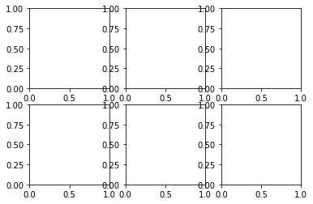
Grafico sencillo
La forma más sencilla de crear una Figura con Ejes es usando pyplot.subplots
import matplotlib.pyplot as plt
fig, ax = plt.subplots() # Crea una figura que contenga un solo eje.
ax.plot([1, 2, 3, 4], [1, 4, 2, 3]); # Grafica datos en los ejes.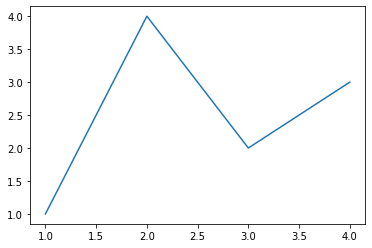
Graficar puntos
Utilizamos la función scatter(x, y): Dibuja un diagrama de puntos con las coordenadas de la lista x en el eje X y las coordenadas de la lista y en el eje Y.
Utilizando la función plt.savefig('---.png') podemos guardar el gráfico en formato png
# Crear la figura y los ejes
fig, ax = plt.subplots()
# Dibujar puntos
ax.scatter(x = [1, 2, 3, 4, 5, 6, 7], y = [3, 2, 1, 4, 6, 2, 1], c="r")
# Guardar el gráfico en formato png
plt.savefig('diagrama-dispersion.png')
# Mostrar el gráfico
plt.show()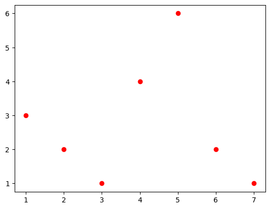
Otro ejemplo
# Fixing random state for reproducibility
np.random.seed(19680801)
N = 50
x = np.random.rand(N)
y = np.random.rand(N)
colors = np.random.rand(N)
area = (30 * np.random.rand(N))**2 # 0 to 15 point radii
plt.scatter(x, y, s=area, c=colors, alpha=0.5)
plt.show()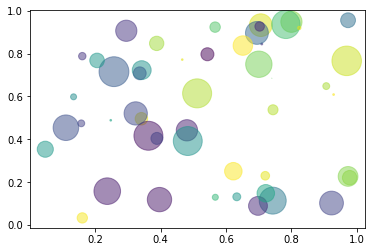
Grafica de funciones
#Crea el vecto x con 50 valores equidistantes
x = np.linspace(0,20,50)
# Crea el vector y
y= np.sin(x)
c = plt.plot(x, y, 'c-3', linewidth = 2, label="sen(x)")
plt.legend(loc=3)
<matplotlib.legend.Legend at 0x7fe026c4e150>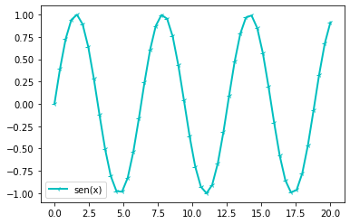
Graficar otra función
En esta grafica tenemos puntos y ademas, graficamos una función.
#Crea el vecto x con 30 valores equidistantes
x = np.linspace(0,20,30)
# Crea el vector y
y= np.array(x**0.5)
plt.scatter(x,y,color="green")
c = plt.plot(x, y, '-', color="red", linewidth = 2, label="x^0.5")
# Se ingresa la posición donde se quiere ubicar la leyenda de la grafica
plt.legend(loc=4)
<matplotlib.legend.Legend at 0x7fe0273877d0>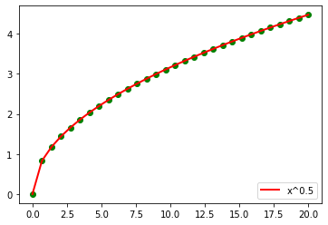
Estilos
Se tienen dos metodos esenciales para trabajar con matplotlib.
- Crear explícitamente figuras y ejes, llamando metodos en ellos.
x = np.linspace(0, 2, 100) # Sample data.
# Note that even in the OO-style, we use `.pyplot.figure` to create the Figure.
fig, ax = plt.subplots(figsize=(5, 2.7))
ax.plot(x, x, label='linear') # Plot some data on the axes.
ax.plot(x, x**2, label='quadratic') # Plot more data on the axes...
ax.plot(x, x**3, label='cubic') # ... and some more.
ax.set_xlabel('x label') # Add an x-label to the axes.
ax.set_ylabel('y label') # Add a y-label to the axes.
ax.set_title("Simple Plot") # Add a title to the axes.
ax.legend(); # Add a legend.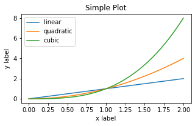
- Confiar en pyplot para crear y administrar automáticamente las figuras y los ejes, utilizando las funciones de pyplot para trazar.
x = np.linspace(0, 2, 100) # Sample data.
plt.figure(figsize=(5, 2.7))
plt.plot(x, x, label='linear') # Plot some data on the (implicit) axes.
plt.plot(x, x**2, label='quadratic') # etc.
plt.plot(x, x**3, label='cubic')
plt.xlabel('x label')
plt.ylabel('y label')
plt.title("Simple Plot")
plt.legend();Diagramas de areas
fill_between(x, y): Dibuja el area bajo el polígono con los vértices dados por las coordenadas de la lista x en el eje X y las coordenadas de la lista y en el eje Y.
fig, ax = plt.subplots()
ax.fill_between([1, 2, 3, 4], [1, 2, 0, 0.5])
plt.show()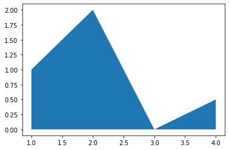
Podemos modificar el color añadiendo otro parametro en la función fill_between(x, y, facecolor="Name_Color"):
fig, ax = plt.subplots()
ax.fill_between([1, 2, 3, 4], [1, 2, 0, 0.5], facecolor="r")
plt.show()Anotar
fig, ax = plt.subplots(figsize=(5, 2.7))
t = np.arange(0.0, 5.0, 0.01)
s = np.cos(2 * np.pi * t)
line, = ax.plot(t, s, lw=2)
ax.annotate('local max', xy=(2, 1), xytext=(3, 1.5),
arrowprops=dict(facecolor='black', shrink=0.05))
ax.set_ylim(-2, 2);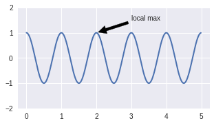
Matplotlib Subplot
Sintaxis:
subplot(numRows, numCols, plotNum)
* numRows = Número de filas
* numCols = Número de columnas
* plotNum = Número de gráfica#plot 1:
x = np.array([0, 1, 2, 3])
y = np.array([3, 8, 1, 10])
plt.subplot(3, 1, 1)
plt.plot(x,y)
plt.title("Plot 1")
#plot 2:
x = np.array([0, 1, 2, 3])
y = np.array([10, 20, 30, 40])
plt.subplot(3, 1, 3)
plt.plot(x,y)
plt.title("Plot 2")
plt.show()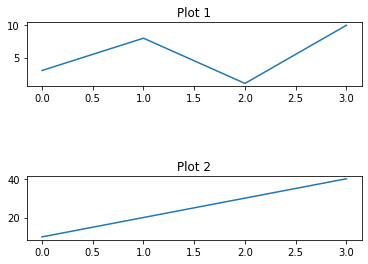
Grafica en coordenadas polares
theta = np.linspace(0, 2.*np.pi, 1000)
a = 1.
r = 2 * a * (1. + np.cos(theta))
plt.polar(theta, r)
plt.show()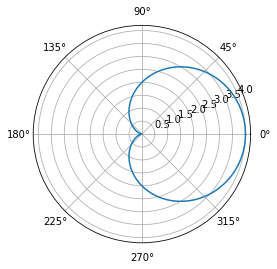
Diagrama de Barras
x = np.array(["A", "B", "C", "D"])
y = np.array([3, 8, 1, 10])
plt.bar(x, y, color="c")
## Leyenda en el eje x
plt.xlabel('Grupos')
## Leyenda en el eje y
plt.ylabel('Cantidad')
## Título de Gráfica
plt.title('Grafica')
plt.show()Diagrama de torta
y = np.array([35, 25, 25, 15])
mylabels = ["Apples", "Bananas", "Cherries", "Dates"]
plt.pie(y, labels = mylabels)
plt.show() 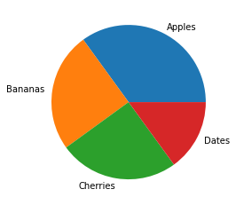